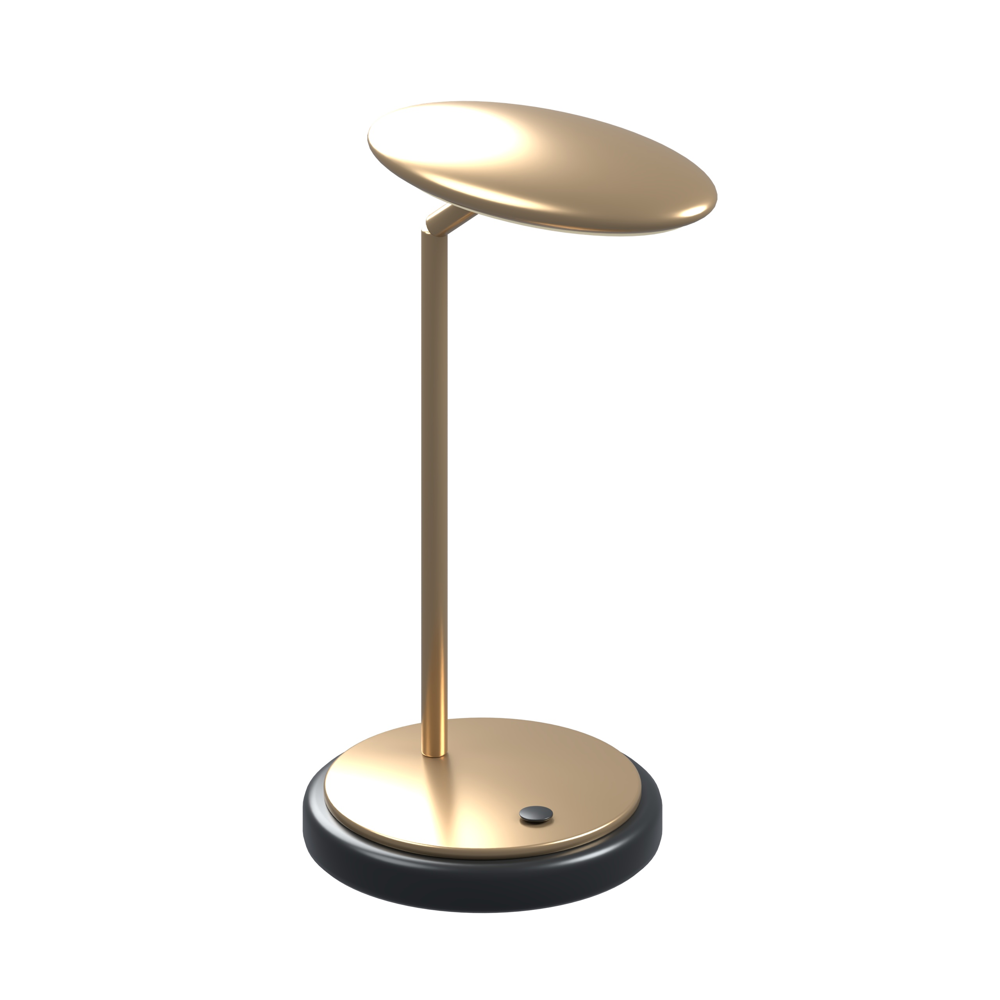
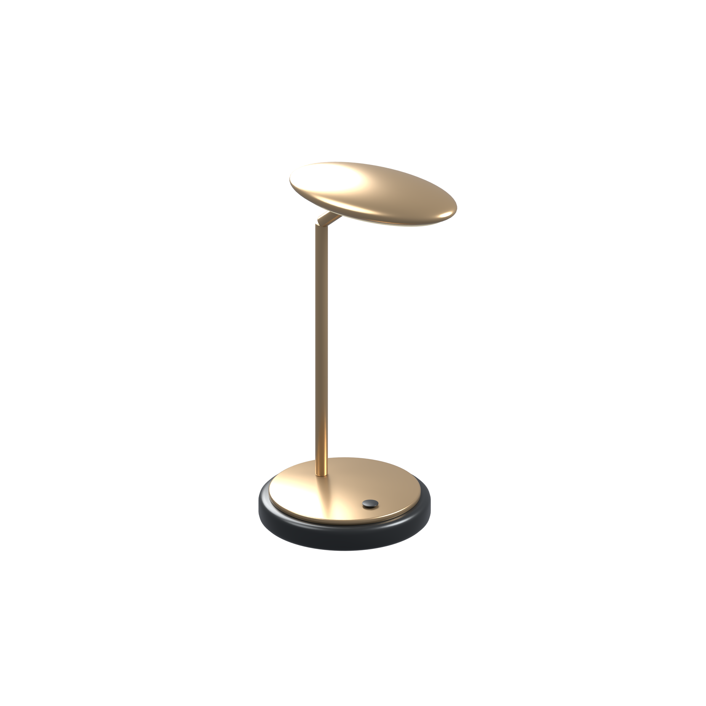

01WŁASNA PRÓBKA · LED


Pionowy kadr i satynowy metal
Lampa stołowa LED
Wysmukła sylwetka zachowuje wyraźny kontur. Zbliżenie podkreśla głowicę, podstawę i wykończenie.
2560 × 2560PNG + JPGBiel: 90.6% obrazu
Porównaj kadr wejściowy

Ten sam model i proporcje. Zmieniono skalę kadru; geometrii nie rozciągano.